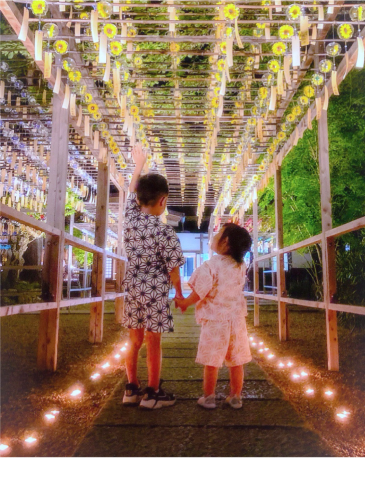
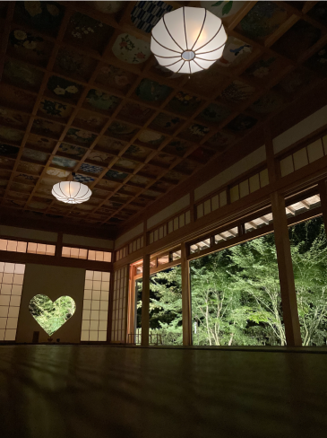
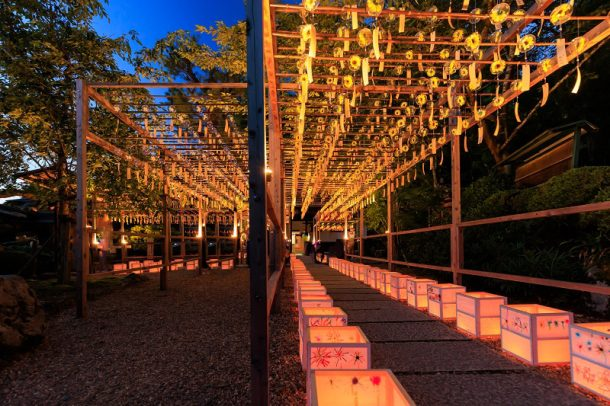
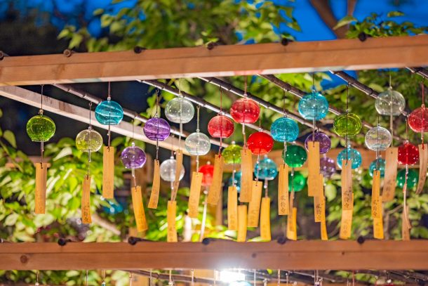

最新の情報は 公式サイトのツアーページ をご覧ください。
正寿院 ろうそくまつり送迎プラン【2026年】
| 京都駅発着 | 7,500円（税込） |
| JR宇治駅発着・ 京阪宇治駅発着 | 6,500円（税込） |
※1名様からご予約いただけますが4名様以上で運行します。
※拝観時はドライバーは同行いたしません。
※大人・小人同額となります。
※旅行代金には拝観料(1,000円)が含まれておりません。
当日お寺の拝観料受付にて直接お支払お願いします。
★本ページの写真提供：＠macchan358 様 / 正寿院 様
| 現在のお申込み状況(最少催行人数4名) | |||
| 催行確定 |
※最新のお申込み状況はお問い合わせください
本ツアーの募集は終了いたしました
＜MKトラベルTOPはこちら▶＞
＜おすすめツアーはこちら▶＞
お客様の声にお応えして今年も発売！
2025年に初めて運行した「正寿院 ろうそくまつり送迎プラン」を今年も発売！
風鈴が灯りに照らされ、幻想的な雰囲気に包まれる一夜限りの伝統行事「正寿院 ろうそくまつり」へご案内します。
ろうそくの揺らめきとともに風鈴がきらめく、年に一度の貴重な夜です。
どうぞ静かに、心穏やかなひとときをお過ごしください。
| 🕯️正寿院「ろうそくまつり」とは 年に一度だけ、ろうそくの灯火のもとで厳かに営まれる伝統行事。 法要・法話に加え、心に響く演奏会も開催されます。 この日は風鈴もライトアップされ、昼間とは異なる幻想的な美しさが広がります。 |
行程
| 16:00 | 京都駅八条口MKタクシーのりば （集合・出発） |
| 16:40 | 京阪宇治駅（集合・出発） |
| 16:50 | JR宇治駅（集合・出発） |
| 17:20 | 正寿院（到着） |
| ↓ | 点灯されたろうそくと風鈴の幻想的な景観をお楽しみください（17:30頃） |
| ↓ | 法要・法話・演奏会（18:00~） |
| 19:30 | 正寿院（出発） |
| 20:00 | JR宇治駅（解散） |
| 20:10 | 京阪宇治駅（解散） |
| 20:40 | 京都駅（解散） |
※法要前は客殿への立ち入りはいただけません。
※御朱印は法要終了後にお受けください。
※法要中は境内を含め写真撮影・録音等はお控えいただいております。


写真提供：＠macchan358 様


写真提供：正寿院 様
【MKトラベルLINE公式アカウント】
MKトラベルの新規ツアー情報をLINEでお届けいたします

【各SNSでも京都の情報やツアー情報をお届けしています】


旅行条件
| ツアー番号 | T281AA／T281BB |
| 出発地 | 京都市 |
| 添乗員／ガイド | なし（乗務員がその業務を代行いたします）／なし |
| 食事 | なし |
| 最少催行人数 | 4名様 |
お申込みについてのご注意
※旅行条件・旅行代金は、2026年7月1日現在を基準としています。
※行程および帰着時間は交通事情などにより変更になる場合があります。
※お申込みの前に弊社の募集型企画旅行規約をご確認ください。
★正寿院 風鈴まつりの注意事項は正寿院公式サイトをご確認ください→https://shoujuin.boo.jp/
よくある質問
Q.正寿院への送迎プランは他にもありますか？
A.日中の風鈴まつりを楽しめる送迎プランと、宇治田原を満喫できるプランがございます。詳細は下記リンクよりご確認ください。
正寿院 風鈴まつり送迎プラン 2025(2026/6/1～9/30の月木金／土日祝運行)
タクシーで快適♪宇治田原を満喫！正寿院と寺社巡りの旅(通年販売)
Q.1名ですが、申し込みできますか？
A.はい。お一人参加の方もたくさんいらっしゃいますので、お気軽にお申し込みください。
本ツアーの募集は終了いたしました
＜MKトラベルTOPはこちら▶＞
＜おすすめツアーはこちら▶＞
・TACPOカード
・クレジットカード決済
・コンビニ決済
お支払方法詳細はこちら
お客様のご都合でご予約をキャンセルされる場合は、すみやかに下記お問合せ先までご連絡ください。
キャンセル料
11日目に当たる日以前
無料
10日目に当たる日以前
20%
7日目に当たる日以前
30%
旅行開始日の前日
40%
旅行開始日の当日
50%
旅行開始後又は無連絡
100%